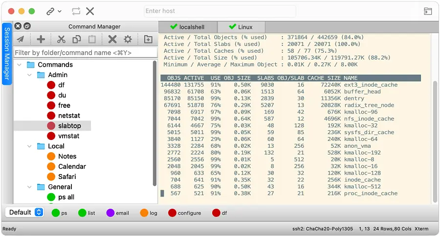
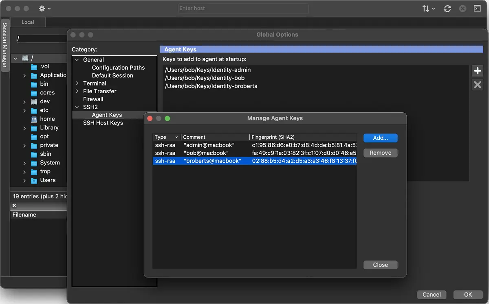

请访问原文链接：SecureCRT & SecureFX 9.7.3 for macOS, Linux, Windows - 跨平台的多协议终端仿真和文件传输 查看最新版。原创作品，转载请保留出处。
作者主页：sysin.org
SecureCRT 客户端运行于 Windows、Mac 和 Linux，将坚如磐石的终端仿真与强大的加密、广泛的身份验证选项以及 SSH（Secure Shell）协议的数据完整性结合起来 (sysin)，以实现安全的网络管理和最终用户访问。SecureFX 是 SecureCRT 配套的文件传输客户端，支持 FTP、HTTP、HTTPS、SFTP、SCP 和 Amazon S3。
适用于 Windows、Mac 和 Linux 的 SecureCRT 客户端为计算专业人员提供坚如磐石的终端仿真，通过高级会话管理以及多种节省时间和简化重复任务的方法来提高工作效率 (sysin)。SecureCRT 为组织中的每个人提供安全的远程访问、文件传输和数据隧道。

适用于 Windows、Mac 和 Linux 的灵活文件传输客户端为您提供了提高文件传输操作和站点同步的安全性和效率所需的工具。SecureFX 的用户友好界面使其易于学习，并且对多个平台的支持使您可以将 Secure Shell 协议强大的加密和身份验证机制应用于传输中的数据。

新增功能
SecureCRT 9.7 新增功能
摘要：
- Snapshots（快照）
- Active Sessions Manager enhancements（活动会话管理器增强功能
- Ad hoc keyword highlighting（临时关键字高亮）
- Credentials manager enhancements（凭据管理器增强功能）
- SFTP enhancements（SFTP 增强功能）
- Algorithm support（算法支持）
- Emulation support（仿真支持）
- Teleport compatibility（Teleport 兼容性）
简介：
Snapshots（快照）
将一组会话及其布局信息保存为快照，这对于根据工作类型或工作地点设置不同工作区非常有用。Active Sessions Manager enhancements（活动会话管理器增强功能）
通过在活动会话管理器中对多个项目执行断开、关闭和锁定操作来节省时间 (sysin)。一目了然地查看哪个会话是活动会话以及当前有多少会话处于打开状态。
活动会话管理器增强功能通过显示打开会话的数量以及哪个是活动会话，使处理打开的会话更加方便。Ad hoc keyword highlighting（临时关键字高亮）
在工具栏的关键字编辑框中输入单词或短语以暂时高亮显示。
通过在工具栏的关键字编辑框中输入或粘贴单词或短语来暂时高亮显示它。Credentials manager enhancements（凭据管理器增强功能）
凭据管理器条目可以在不填写用户名的情况下创建，这对于需要 enable 密码的连接非常有用。会话可以配置为在连接时始终提示使用一组已保存的
凭据。SFTP enhancements（SFTP 增强功能）
配置为 SSH2 协议的已保存会话现在可以直接在 SFTP 标签中连接 (sysin)，无需先打开终端连接。可以通过将系统文件资源管理器中的文件拖入 SSH2 终端
会话来启动 SFTP 传输。Algorithm support（算法支持）
增加对 diffie-hellman-group15-sha512 和 diffie-hellman-group17-sha512 密钥交换算法的支持。Emulation support（仿真支持）
增加对 Xterm 216+ 键盘仿真和 Xterm R6 备用键盘的支持。Teleport compatibility（Teleport 兼容性）
可以为受信任的 OpenSSH 证书及其私钥文件指定不同位置，从而增强与 Teleport 的兼容性。
SecureFX 9.7 新增功能
摘要：
- Pause and resume file transfers（暂停和恢复文件传输）
- Time-saving enhancements（节省时间的增强功能）
- Credentials manager enhancements（凭据管理器增强功能）
- Algorithm support（算法支持）
简介：
Pause and resume file transfers（暂停和恢复文件传输）
当需要中止传输时，可以在传输队列中轻松暂停并恢复，而无需取消传输。
传输可以暂停而不是取消，使中断和恢复传输更加方便。Time-saving enhancements（节省时间的增强功能）
通过菜单点击即可创建本地和远程文件。快速在系统文件资源管理器中打开选定的本地文件夹。Credentials manager enhancements（凭据管理器增强功能）
凭据管理器条目可以在不填写用户名的情况下创建，这对于需要 enable 密码的连接非常有用 (sysin)。会话可以配置为在连接时始终提示使用一组已保存的凭
据。Algorithm support（算法支持）
增加对 diffie-hellman-group15-sha512 和 diffie-hellman-group17-sha512 密钥交换算法的支持。
系统要求
SecureCRT & SecureFX for macOS
9.5 要求 macOS 11.0 及更新，9.6 要求 macOS 12.0 及更新，9.7 要求 macOS 14.0 及更新。
SecureCRT & SecureFX for Linux
Ubuntu 20.04 LTS x64 仅限 9.5 版本。
SecureCRT & SecureFX for Windows
下载地址
SecureCRT & SecureFX 9.5 – January 16, 2024
SecureCRT & SecureFX 9.5.1 – February 27, 2024 (此更新包含在相同目录下)
SecureCRT & SecureFX 9.5.2 – May 07, 2024 (此更新包含在相同目录下)
SecureCRT & SecureFX 9.5.x Bundle for macOS x64 (Intel 处理器) (dmg 格式)
百度网盘链接：https://pan.baidu.com/s/1F7uzYYfmkTOD6BSEPeQkLw?pwd= <专享>
SecureCRT & SecureFX 9.5.x Bundle for macOS arm64 (Apple 芯片) (dmg 格式)
百度网盘链接：https://pan.baidu.com/s/1J70qtseCL5L-s5fVstbGDQ?pwd= <专享>
SecureCRT & SecureFX 9.5.x Bundle for Ubuntu 22.04 x64 (deb 格式)
百度网盘链接：https://pan.baidu.com/s/1BAf-odRPPEz0_bbwmIj7Ew?pwd= <专享>
SecureCRT & SecureFX 9.5.x Bundle for Ubuntu 20.04 x64 (deb 格式)
百度网盘链接：https://pan.baidu.com/s/1ZNI404c0YAJtoKThZ-YFHg?pwd= <专享>
SecureCRT & SecureFX 9.5.x Bundle for Windows x64 (64-bit) (exe 格式)
百度网盘链接：https://pan.baidu.com/s/16HqiqxYDpOuf9A60FqWRnw?pwd= <专享>
SecureCRT & SecureFX 9.5.x Bundle for Windows x86 (32-bit) (exe 格式)
百度网盘链接：https://pan.baidu.com/s/190HkNMUaZCEsoARxv4NbSA?pwd= <专享>
以上全部为 Bundle 版本。
SecureCRT & SecureFX 9.6 – November 19, 2024
SecureCRT & SecureFX 9.6.1 – December 17, 2024 (Bug Fixes only，此更新包含在相同目录下)
SecureCRT & SecureFX 9.6.2 – February 20, 2025 (Bug Fixes only，此更新包含在相同目录下)
SecureCRT & SecureFX 9.6.3 – May 8, 2025 (官方支持 Windows Server 2025，及常规 Bug 修复，此更新包含在相同目录下)
SecureCRT & SecureFX 9.6.4 – September 16, 2025 (Bug Fixes only，此更新包含在相同目录下)
新增 macOS Sequoia 支持。
新增 Ubuntu 24.04 x64 版本，20.04 已弃用。
Windows 32-bit 可支持，无用户暂未更新。
SecureCRT & SecureFX 9.6.x Bundle for macOS x64 (Intel 处理器) (dmg 格式)
百度网盘链接：https://pan.baidu.com/s/1F7uzYYfmkTOD6BSEPeQkLw?pwd= <专享>
SecureCRT & SecureFX 9.6.x Bundle for macOS arm64 (Apple 芯片) (dmg 格式)
百度网盘链接：https://pan.baidu.com/s/1J70qtseCL5L-s5fVstbGDQ?pwd= <专享>
SecureCRT & SecureFX 9.6.x Bundle for Ubuntu 24.04 x64 (deb 格式)
百度网盘链接：https://pan.baidu.com/s/19qvtnllhglfsDAgSd-1ueQ?pwd= <专享>
SecureCRT & SecureFX 9.6.x Bundle for Ubuntu 22.04 x64 (deb 格式)
百度网盘链接：https://pan.baidu.com/s/1BAf-odRPPEz0_bbwmIj7Ew?pwd= <专享>
SecureCRT & SecureFX 9.6.x Bundle for Windows x64 (64-bit) (exe 格式)
百度网盘链接：https://pan.baidu.com/s/16HqiqxYDpOuf9A60FqWRnw?pwd= <专享>
以上全部为 Bundle 版本。
SecureCRT & SecureFX 9.7 – December 9, 2025
SecureCRT & SecureFX 9.7.1 – February 17, 2026 (Bug Fixes only，此更新上传在相同目录下)
SecureCRT & SecureFX 9.7.2 – April 14, 2026 (Bug Fixes only，此更新上传在相同目录下)
SecureCRT & SecureFX 9.7.3 – July 1, 2026 (Bug Fixes only，此更新上传在相同目录下)
SecureCRT & SecureFX 9.7.x Bundle for macOS x64 (Intel 处理器) (dmg 格式)
百度网盘链接：https://pan.baidu.com/s/1F7uzYYfmkTOD6BSEPeQkLw?pwd= <专享>
SecureCRT & SecureFX 9.7.x Bundle for macOS arm64 (Apple 芯片) (dmg 格式)
百度网盘链接：https://pan.baidu.com/s/1J70qtseCL5L-s5fVstbGDQ?pwd= <专享>
SecureCRT & SecureFX 9.7.x Bundle for Ubuntu 24.04 x64 (deb 格式)
百度网盘链接：https://pan.baidu.com/s/19qvtnllhglfsDAgSd-1ueQ?pwd= <专享>
SecureCRT & SecureFX 9.7.x Bundle for Ubuntu 22.04 x64 (deb 格式)
百度网盘链接：https://pan.baidu.com/s/1BAf-odRPPEz0_bbwmIj7Ew?pwd= <专享>
SecureCRT & SecureFX 9.7.x Bundle for Windows x64 (64-bit) (exe 格式)
百度网盘链接：https://pan.baidu.com/s/16HqiqxYDpOuf9A60FqWRnw?pwd= <专享>
以上全部为 Bundle 版本。
更多：HTTP 协议与安全

文章用于推荐和分享优秀的软件产品及其相关技术，所有软件默认提供官方原版（免费版或试用版），免费分享。对于部分产品笔者加入了自己的理解和分析，方便学习和研究使用。任何内容若侵犯了您的版权，请联系作者删除。如果您喜欢这篇文章或者觉得它对您有所帮助，或者发现有不当之处，欢迎您发表评论，也欢迎您分享这个网站，或者赞赏一下作者，谢谢！
 支付宝赞赏
支付宝赞赏  微信赞赏
微信赞赏赞赏一下
敬请注册！点击 “登录” - “用户注册”（已知不支持 21.cn/189.cn 邮箱）。 请勿使用联合登录（已关闭）。